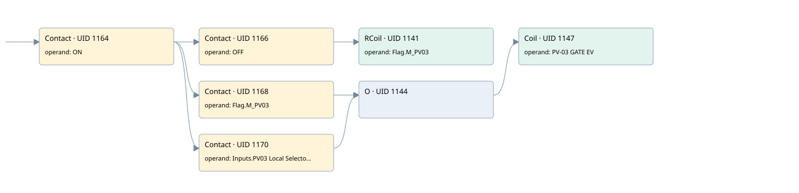

pv03
motors 1 · 검색 색인 순서 43 · 원본 내부 NID 추정 42
백업 PLF 원본의 2819468 바이트 위치에서 복원한 XML. 검색 문서 1972의 객체 키 16102200ce11000000000000와 연결했다. 이름 해석 6/6개. 남은 RefId는 상수 또는 미해석 참조다.
연결 구조 다시 그리기
원본 Part/PCon/Wire를 이용한 연결도다. TIA 화면의 래더 배치 또는 실행 결과를 재현한 그림은 아니다. 핀 연결은 아래 표와 원본 XML을 기준으로 읽는다. 노드 위에 마우스를 두면 피연산자 이름을 볼 수 있다.

접점·코일·블록과 피연산자
| Part UID | Gate | Negated 핀 | 연결 피연산자 |
|---|---|---|---|
| 1164 | Contact | operand = ON | |
| 1166 | Contact | operand = OFF | |
| 1141 | RCoil | operand = Flag.M_PV03 | |
| 1168 | Contact | operand = Flag.M_PV03 | |
| 1170 | Contact | operand = Inputs.PV03 Local Selector | |
| 1144 | O | ||
| 1147 | Coil | operand = PV-03 GATE EV |
접점 경로를 펼친 조건식
Contact·O/A·비교기의 원본 연결을 읽기 쉽게 펼친 보조 해석이다. POWER는 전원 레일 시작을 뜻한다. 호출 블록·에지·타이머의 내부 동작과 다중 쓰기 순서는 이 표로 실행 검증하지 않았다. 미해석 핀과 RefId는 원문 연결표에서 확인한다.
| UID | 동작 | 대상 | 원본 접점 경로 | 내용 |
|---|---|---|---|---|
| 1141 | RCoil | Flag.M_PV03 | (ON AND OFF) | 조건 성립 시 Reset |
| 1147 | Coil | PV-03 GATE EV | ((ON AND Flag.M_PV03) OR (ON AND Inputs.PV03 Local Selector)) | 조건에 따른 Coil 기록 |
원본 배선 연결
| Wire UID | 동일 Wire 연결 끝점 |
|---|---|
| 1172 | Powerrail {} ↔ Part 1164.in |
| 1154 | ORef 1148 (ON) ↔ Part 1164.operand |
| 1165 | Part 1164.out ↔ Part 1166.in ↔ Part 1168.in ↔ Part 1170.in |
| 1155 | ORef 1149 (OFF) ↔ Part 1166.operand |
| 1167 | Part 1166.out ↔ Part 1141.in |
| 1157 | ORef 1150 (Flag.M_PV03) ↔ Part 1141.operand |
| 1158 | ORef 1151 (Flag.M_PV03) ↔ Part 1168.operand |
| 1169 | Part 1168.out ↔ Part 1144.in1 |
| 1159 | ORef 1152 (Inputs.PV03 Local Selector) ↔ Part 1170.operand |
| 1171 | Part 1170.out ↔ Part 1144.in2 |
| 1160 | Part 1144.out ↔ Part 1147.in |
| 1162 | ORef 1153 (PV-03 GATE EV) ↔ Part 1147.operand |
식별자 해석 근거 6개
| ORef UID | RefId | 이름 | IdentXmlPart 파일 | 해석 방법 |
|---|---|---|---|---|
| 1148 | 1 | ON | 0602-IdentXmlPart.xml | UID/RID + search-text + NID agreement |
| 1149 | 33 | OFF | 0602-IdentXmlPart.xml | UID/RID + search-text + NID agreement |
| 1150 | 193 | Flag.M_PV03 | 0604-IdentXmlPart.xml | UID/RID + search-text + NID agreement |
| 1151 | 193 | Flag.M_PV03 | 0604-IdentXmlPart.xml | UID/RID + search-text + NID agreement |
| 1152 | 256 | Inputs.PV03 Local Selector | 0604-IdentXmlPart.xml | UID/RID + search-text + NID agreement |
| 1153 | 195 | PV-03 GATE EV | 0602-IdentXmlPart.xml | UID/RID + search-text + NID agreement |
검색 코드 보조 자료
참조 명칭을 찾기 위한 자료이며 실행 순서나 AND/OR 관계는 위 연결표로 확인한다.
"on" "off" "flag".m_pv03 "flag".m_pv03 "pv-03 gate ev" "inputs"."pv03 local selector"